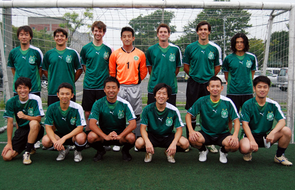
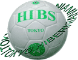

Tokyo Hibernian FC |

|
|
Back Row: Kenji Sueki, Andre Pinto, Jay Alabaster, Hitoshi Ono, Mike McGirr, Bevan Colless, Kuni Katase. |
Tokyo Hibernian Football Club was founded in 1998, combined by two teams, the Albion FC and Tokyo Irish. We've won two Championships and a Cup in TML, and have been finishing in Top 3 every season since TML started. The uniqueness of the club is that we were a good mix of all kinds of races. |
close |